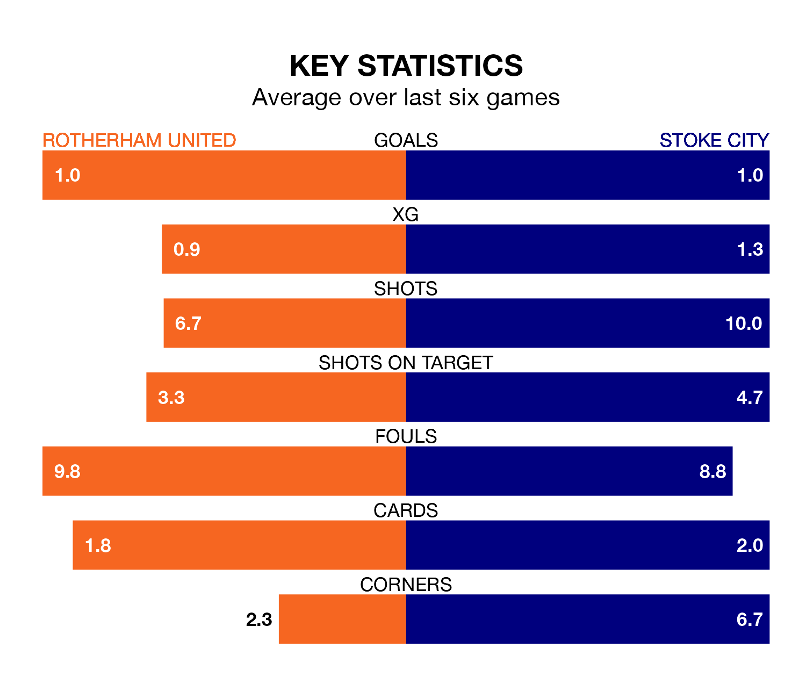

Stoke City face Rotherham United on Saturday seeking to protect their long unbeaten run in the Championship.
The Potters are unbeaten in six, with one win and five draws, ahead of the 3pm kick-off.
They face a Rotherham team who have won one and drawn two over the same number of games.
Rotherham are bottom of the table after 26 games, of which they have won three and drawn nine, earning 18 points.
Stoke are five places ahead of United in 19th, with seven wins and eight draws putting them on 29 points.
In the last three years, Rotherham and Stoke have played each other on five occasions. Rotherham won one of them, Stoke two, and they drew twice.
On average, the Millers scored 1.6 goals and the Potters 3.0 in those matches.
Their last meeting was on August 29, when Stoke won 6-1 at home.
With 24 goals in 26 games so far this season, the Millers are the league's third-lowest scorers with 0.9 goals per game. And they are conceding more than average, letting in 50 goals at a rate of 1.9 per game.
City are also below average scorers, with 1.0 goal per game, compared to a league average of 1.4. They have conceded 1.2 goals per game.
Rotherham's last match was on January 1, a 2-2 draw against Blackburn Rovers, with Sean Morrison and Tom Eaves getting the goals for the Millers.
Stoke drew 0-0 with Ipswich Town last time out, also on January 1.
Saturday's match will be refereed by Keith Stroud, who has taken charge of 13 Championship games so far this season, issuing one red card and booking 68 players. He has not awarded any penalties.
He is yet to oversee a match featuring either Rotherham or Stoke this season.
Updated: 10:50, 10/01/24